В этом видео я рассказываю о всех аспектах при подготовке дизайн-проекта под умный дом, показываю, как правильно заполнить наш опросник, а так же рассказываю много чего интересного про умные дома и их возможности.
Создание умного дома начинается не с покупки гаджетов, а с грамотного дизайн-проекта. Ошибки на этапе чертежей приводят к вскрытию стен и потолков после чистовой отделки. Ниже — подробный разбор ключевых узлов автоматизации, который сэкономит вам бюджет и нервы.
Главная проблема строек — коммуникация. Чтобы контроллер (мозг дома) и электрик понимали друг друга, нужна жесткая система названий.
Свет — это 80% комфорта. Основная задача умного дома — обеспечить правильную яркость в разное время суток (биодинамическое освещение).
Зачем нужно диммирование?
Какой протокол выбрать: TRIAC или DALI?
Важно: При выборе дизайнерских люстр (особенно светодиодных колец) уточняйте тип блока питания. В 90% случаев встроенные блоки не поддаются диммированию без замены.
Ленты используются в закарнизной нише, кухонных фартуках и мебели. Главная ошибка — прятать блоки питания за потолок.
Автоматизация штор обязательна для панорамных окон и спален.
Умный дом управляет климатом эффективнее, чем обычные термостаты, благодаря PID-регулированию.
До начала электромонтажа у вас должна быть заполнена Сводная таблица устройств. В ней по каждому потребителю указано:
Без этой таблицы покупка оборудования для умного дома — лотерея с высоким риском ошибки.
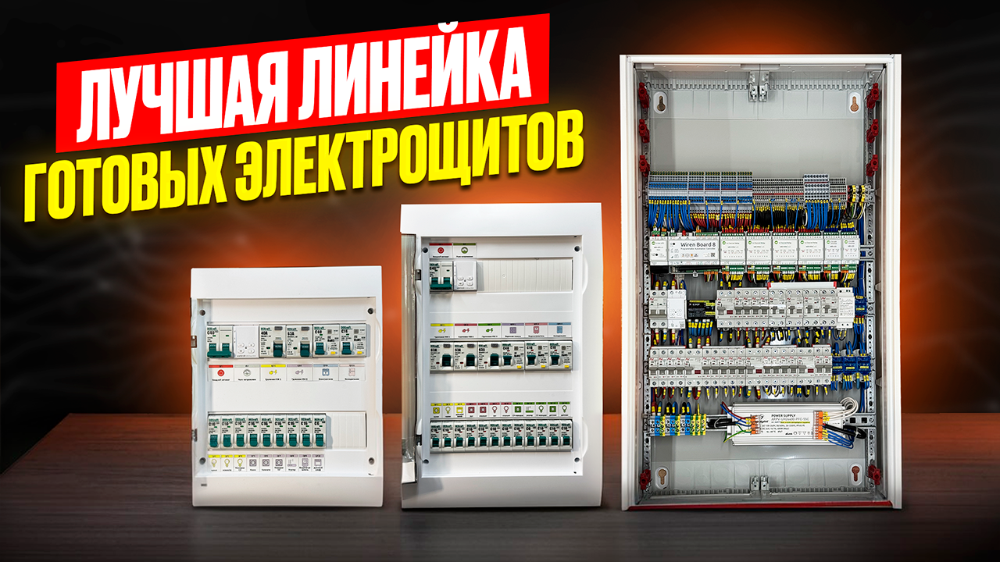
В этом видео я расскажу и покажу нашу линейку готовых решений по электрощитам для квартир со стандартным ремонтом и для заказчиков, которым важно получить качественный электрощит со всем набором защитных функций и при этом не тратить недели на его ожидание.
Долгое время рынок электромонтажа делился на две крайности: либо дешевые и небезопасные «сборки» из ближайшего строительного магазина, либо эксклюзивные индивидуальные проекты, требующие недель ожидания и огромных бюджетов. Проанализировав сотни выполненных объектов, наша мастерская пришла к выводу: 90% заказчиков со стандартными ремонтами имеют абсолютно идентичные запросы.
Основываясь на этой статистике, мы разработали линейку типовых электрических щитов. Это готовые инженерные решения, которые соответствуют самым строгим современным требованиям электробезопасности, но при этом экономят ваше время и деньги.
Главное преимущество типового щита — отсутствие этапа проектирования. Вам не нужно платить инженеру за разработку схемы, потому что мы уже создали «золотой стандарт» для одно- и двухкомнатных квартир. В отличие от конкурентов, которые пытаются удешевить продукт в ущерб качеству, мы принципиально отказались от экономии на безопасности.
Для сборки малых щитов (на 24 модуля) мы используем корпуса серии Easy9 Box. Это критически важный момент. Дешевые щиты часто собираются в корпусах из вторично переработанного пластика. Со временем такой материал желтеет, становится хрупким и теряет вид.
Корпуса Easy9 производятся из первичного пластика. Они сохраняют белизну и прочность на протяжении всего срока эксплуатации. Да, такой корпус стоит 2–3 тысячи рублей (против 500 рублей за дешевый аналог), но это инвестиция в долговечность и эстетику вашего ремонта.
Внутри щита мы устанавливаем автоматику линейки Dekraft. Здесь тоже есть нюанс, скрытый от глаз обывателя. Стандартные «домашние» серии автоматов имеют отключающую способность 4.5 кА. Мы же используем профессиональную линейку на 6 кА.
Стандартный щит комплектуется вводным автоматом на 40А. Если в вашем подъездном щите выделенная мощность меньше — это нормально (селективность соблюдается). Если же на входе стоит 50А или 63А, вводной автомат в квартирном щите потребуется заменить на аналогичный номинал.
Важно понимать: типовой щит — это оптимизированный продукт. Изменение его состава (добавление одного автомата или убавление другого) ломает производственный процесс и удорожает изделие. Поэтому мы предлагаем сбалансированное решение: купить готовый щит и при необходимости подключить резервный автомат дешевле, чем заказывать индивидуальную сборку с нуля.
В наших щитах нет компромиссов по безопасности. Устройства защитного отключения (УЗО) установлены на все группы потребителей, включая освещение и обычные розетки.
Зачем это нужно?
Каждый щит оснащен реле напряжения с цифровой индикацией. Оно контролирует параметры входящей сети. Если напряжение скакнет вверх (обрыв нуля) или просядет ниже допустимого — реле отключит питание, спасая блоки питания вашей бытовой техники, холодильник и компьютер.
Мы внедрили в схему несколько решений, основанных на реальном опыте эксплуатации квартир.
Роутеры часто устанавливают под потолком, в шкафах или на антресолях. Когда интернет «зависает», перезагрузить устройство физически сложно. В нашем щите предусмотрен отдельный автомат для питания роутера. Чтобы перезагрузить интернет, достаточно щелкнуть тумблером в щитке, не вставая на стремянку.
Это одна из самых важных функций. Холодильник подключен через отдельный дифференциальный автомат, независимый от остальных групп.
В чем суть проблемы? Если холодильник «сидит» на одном общем УЗО с другими розетками, то авария в любом приборе (например, короткое замыкание в блоке питания роутера или чайнике) обесточит всю группу, включая холодильник. Был реальный случай, когда у заказчика из-за замыкания в роутере отключился холодильник, и испортилась черная икра на крупную сумму.
Наше решение: Вы можете уехать в отпуск и выключить вводной рубильник или все группы света/розеток. Холодильник останется работать. При этом он защищен своим собственным дифавтоматом, и проблемы на других линиях его не коснутся.
Для 3-4 комнатных квартир с повышенными требованиями к комфорту мы создали флагманское решение на базе автоматизации. Стоимость такого щита «под ключ» составляет около 380 000 рублей, что является крайне выгодным предложением на рынке, где индивидуальные проекты стоят миллионы.
В основе щита лежит контроллер wirenboard 8. Это надежное промышленное решение для домашней автоматизации. Чтобы защитить «мозги» дома от сбоев, в щите установлен блок бесперебойного питания (ИБП) для контроллера.
Щит имеет богатую внутреннюю периферию:
Использование контроллера позволяет превратить обычные звонковые кнопки в многофункциональные пульты управления. Система распознает 4 типа нажатий:
Щит готов к интеграции сложных систем:
Мы позаботились не только о пользователе, но и о монтажнике. Щиты собираются в просторных корпусах (часто используются аналоги ABB Mistral или качественные металлические оболочки для умного дома), где достаточно места для кабель-менеджмента.
Итог: Линейка наших готовых щитов — это ответ на запрос рынка о качественной электрике по адекватной цене. Вы получаете промышленное качество сборки, продуманную до мелочей логику (от роутера до холодильника) и возможность развернуть полноценный умный дом на базе spruthub или других систем, не переплачивая за индивидуальное проектирование.
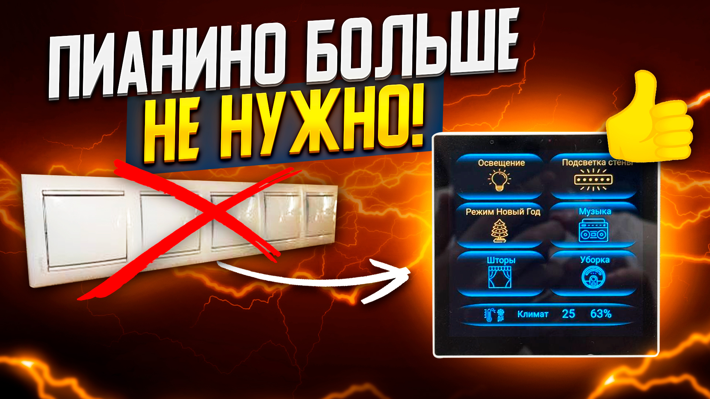
Меня всегда раздражали россыпи пультов и разных термостатов на стенах. Мы придумали, как использовать настенные сенсорные панели так, чтобы это было удобно, эстетично и недорого. Решение не для всех, но оно определенно понравится своей целевой аудитории.
Статья для этого видео находится в процессе написания. Скоро здесь появится подробный разбор интерфейсов и примеры монтажа панелей.
Пока вы можете посмотреть видео или связаться с нами для консультации.
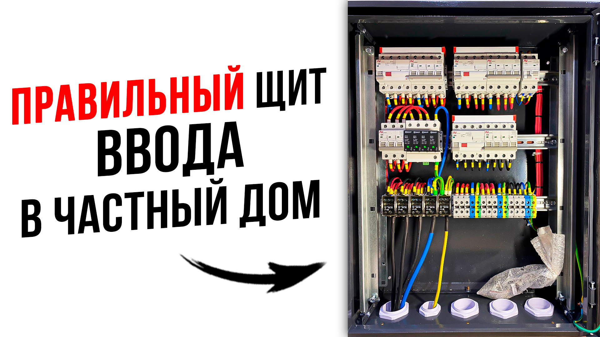
Пример конфигурации щита для частного дома по индивидуальному заказу. Подобные щиты могут быть абсолютно разные по наполнению и решать различные задачи: от простого ввода электричества до сложного распределения по строениям на участке.
Очередной проект нашей мастерской — сборка надежного вводного щита для частного дома в Шерегеше. Условия эксплуатации и требования заказчика заставили нас пересмотреть привычные решения и провести эксперимент с промышленными корпусами и системами крепления. В этом обзоре мы честно расскажем о плюсах и минусах популярных решений от EKF и IEK, а также покажем, как довести заводское изделие до идеала.
Изначально для этого объекта мы планировали собрать щит на базе нашей фирменной кастомной алюминиевой рамы. Это проверенное, но трудоемкое и недешевое решение. Однако в процессе подготовки мы обратили внимание на готовые предложения рынка промышленных корпусов.
Было решено провести эксперимент: заменить кастомную раму на готовое решение со съемными шасси и DIN-рейками (в данном случае рассматривались варианты от EKF и IEK). Цель проста — понять, насколько современные заводские инженерные решения готовы к реальной сборке без «танцев с бубном».
Вводной щит часто стоит на улице или фасаде, поэтому эстетика важна. Чтобы щит не выглядел чужеродным серым пятном, мы отправили корпус в порошковую покраску. Цвет подбирали специально под кровлю и забор участка заказчика.
Важное наблюдение: Толщина металла у корпусов серии IEK Гранит (и аналогов EKF IP65) вполне достойная. После покраски изделие выглядит монолитно и дорого.
В заводской комплектации часто встречаются нюансы с герметичностью или удобством ввода кабеля. В данном корпусе предусмотрена возможность замены фланцев (верхних и нижних), что позволяет решить проблему с перевешиванием двери или изменением стороны ввода кабеля. Это большой плюс для универсальности монтажа.
Самая интересная часть эксперимента началась при сборке рамы. Здесь мы столкнулись с типичными болезнями бюджетных промышленных решений.
Первая и главная претензия к комплектной раме — качество DIN-реек.
Совет мастерам: Если собираете ответственный узел, не надейтесь на штатные рейки в бюджетных корпусах. Лучше сразу заложите бюджет на их замену.
Для аккуратной укладки проводов мы доработали раму:
Финальный этап сборки — установка собранной рамы в окрашенный корпус. Здесь вскрылись конструктивные нюансы корпуса IEK Гранит.
После установки рамы и подключения силовой части мы перешли к маркировке:
Корпус IEK Гранит и аналогичные решения от EKF — это крепкие «середнячки». За свои деньги (которые значительно ниже стоимости ABB или Schneider Electric) они предлагают честный металл и хорошую герметичность.
Однако будьте готовы к доработкам:
В целом, для вводного щита частного дома — это рабочее и надежное решение, которое после небольшой модернизации прослужит долгие годы.
В чем отличия разных способов организации мастер-выключателя в квартире? Сколько стоит сделать это через контактор, и сколько на самом деле стоит правильно организованное общее отключение света одной кнопкой. Разбираем технические нюансы и цены.
«Хочу одну кнопку у входа, чтобы выключать весь свет в квартире». Это, пожалуй, самый частый запрос при обсуждении проекта электрики. Заказчику кажется, что это просто «еще один выключатель» за 500 рублей. Но на деле реализация этой функции может стоить от 5 000 до 400 000 рублей. В чем разница? Давайте разбираться на примерах.
Самый бюджетный способ, который часто предлагают электрики старой закалки или при ограниченном бюджете.
В щите ставится контактор — устройство, которое физически разрывает цепь питания всего освещения. У входной двери ставится обычный выключатель, который управляет этим контактором.
В эту сумму входит сам контактор, выключатель и немного кабеля.
Этот вариант подходит для холостяков или квартир под сдачу. Но для семьи это катастрофа.
Сценарий: Вы лежите в спальне, читаете книгу. Ваша жена уходит из дома и нажимает мастер-выключатель в прихожей. Весь свет в квартире гаснет, включая вашу лампу. Вы щелкаете своим выключателем у кровати — ничего не происходит.
Вам придется встать, идти в темную прихожую и снова включить мастер-кнопку. Это «жесткая» логика: пока мастер-выключатель выключен, остальные выключатели в доме мертвы.
Чтобы избежать проблемы первого варианта, нужно использовать более сложную схему. Здесь на сцену выходят импульсные реле.
Свет выключается не разрывом общей цепи, а подачей команды на каждое реле отдельно. Если мастер-кнопка выключила свет, вы всё равно можете включить его обратно в любой комнате локально.
Кажется, что реле стоят недорого. Но давайте посчитаем реальную смету для средней 3-комнатной квартиры (около 20 групп света):
Итоговая цена: ~206 000 рублей.
Разница с первым вариантом колоссальная: 5 тысяч против 200 тысяч. Но вы получаете комфорт: свет гаснет везде, но его можно включить локально.
Если мы уже тратим 200 тысяч на провода и сборку, имеет смысл доплатить и получить полноценную систему управления на базе контроллеров (например, wirenboard 8).
Все выключатели в доме становятся кнопками управления (джойстиками). Контроллер программно решает, что делать при нажатии.
Да, это дороже варианта с импульсными реле. Но здесь вы платите не просто за «выключение лампочки», а за систему комфорта, которая управляет шторами, климатом, защитой от протечек и мастер-светом.
| Вариант | Цена (ориентир) | Вердикт |
|---|---|---|
| Контактор | ~5 000 ₽ | Дешево, но неудобно. При выключении квартира «умирает». Подходит для квартир под сдачу. |
| Импульсные реле | ~200 000 ₽ | Надежно и удобно. Свет можно включить обратно в любой комнате. Дорого из-за огромного расхода кабеля. |
| Умный дом | ~350 000+ ₽ | Максимальный комфорт. Голос, телефон, сценарии. Лучшее соотношение цены и получаемых функций, если бюджет позволяет. |
Мастер-выключатель — это не просто кнопка, это инженерная система. Выбирайте вариант, исходя из вашего бюджета и требований к комфорту. Но помните: чудес не бывает, и за удобство приходится платить сложной сборкой щита и километрами проводов.
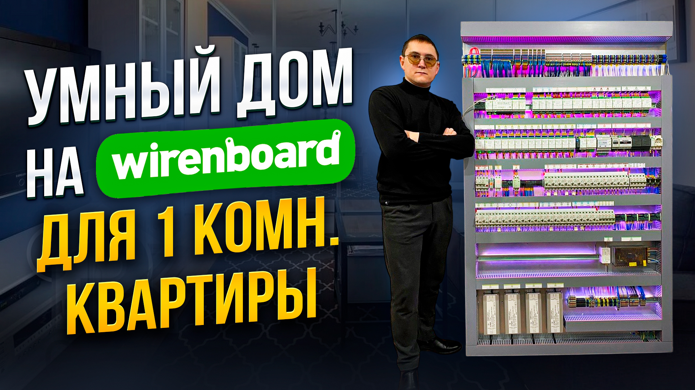
Обзор реализации системы умного дома в квартире на базе популярного промышленного контроллера WirenBoard. Рассмотрим, почему профессионалы выбирают именно это решение, какие возможности оно открывает для автоматизации и как выглядит готовая сборка.
Статья для этого видео находится в процессе написания. Скоро здесь появится подробный разбор архитектуры на WirenBoard и список используемого оборудования.
Пока вы можете посмотреть видео или связаться с нами для заказа проекта.
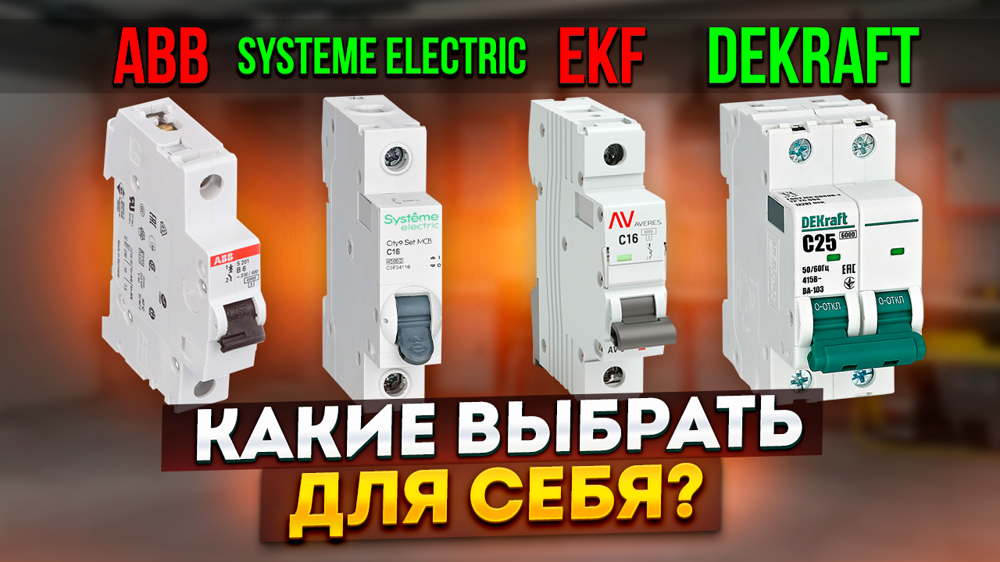
Очень многие заказчики путаются в сериях аппаратов защиты. Я постарался коротко и очень просто, без углубления в технические дебри, рассказать про различия в линейках и объяснить, за что именно вы платите при выборе устройств защиты.
Рынок электротехники изменился. Ушли одни гиганты, появились другие, а привычные бренды сменили названия. В 2024 году перед заказчиком и монтажником стоит непростой выбор: сэкономить, взять «золотую середину» или переплатить за премиум? В этом обзоре мы детально сравним четыре актуальные линейки автоматики: от бюджетного Dekraft до премиального ABB.
Ранее этот бренд принадлежал Schneider Electric и позиционировался как ультрабюджетное решение для коммерческих строек. Сейчас правами владеет российская компания Systeme Electric.
Вердикт: Отличная «рабочая лошадка» для тех, кто хочет сэкономить, но получить безопасное устройство.
Это прямой наследник народной серии Easy9. Производится на том же оригинальном заводе Schneider Electric в Китае, просто под новым именем.
В этой серии реализован механизм, который ранее был доступен только во флагманах (Acti9).
Как это работает: Даже если вы очень медленно поднимаете рычажок автомата, контакты внутри замкнутся мгновенно. Это исключает «дребезг» контактов, искрение и подгорание при включении под нагрузкой. Это значительно продлевает жизнь аппарату.
Линейка Averes от бренда EKF — это попытка сделать премиальный продукт, конкурирующий с европейцами. И попытка успешная.
Цена: Дифавтоматы стоят даже дешевле, чем у City9, при более богатом функционале.
Немецкая классика, которая все еще доступна на рынке, но по заоблачным ценам. Это эталон надежности и удобства монтажа.
Самое интересное кроется в итоговых цифрах. Стоимость щита зависит не от обычных автоматов (разница на них невелика), а от устройств дифференциальной защиты (УЗО и дифавтоматов).
| Бренд | Автомат 1P (16А) | Дифавтомат (16А/30мА) |
|---|---|---|
| Dekraft | ~280 ₽ | ~2 060 ₽ |
| City9 Set | ~350 ₽ | ~4 500 ₽ |
| EKF Averes | ~426 ₽ | ~4 300 ₽ |
| ABB (S-серия) | ~580 ₽ | ~11 000 ₽ |
Если собирать щит для средней квартиры (стандартная начинка):
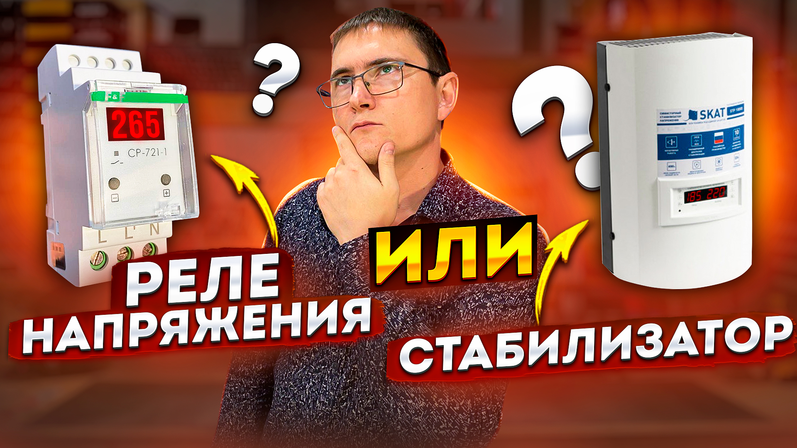
В каких случаях я бы не рекомендовал вообще установку реле напряжения. Поговорим о стабилизаторах, их типах, назначении и когда лучше сразу покупать стабилизатор, а не тратить деньги на реле напряжения.
Электрика в квартире и в частном доме — это два разных мира. Если в городской застройке напряжение, как правило, стабильное, то за городом сети живут своей жизнью. В этом видео мы разбираем главную дилемму домовладельца: ограничиться дешевым реле напряжения или готовиться к покупке дорогостоящих стабилизаторов?
Это «сторож». Оно ничего не исправляет. Его задача — постоянно мониторить сеть.
Если напряжение выходит за безопасные рамки (например, скачок до 260В или просадка до 160В), реле просто отключает питание дома, спасая вашу технику. Когда параметры приходят в норму, оно включает свет обратно.
Это «преобразователь». Устройство содержит трансформатор с множеством обмоток. Оно берет «кривое» напряжение из сети (например, 180В) и выдает на выходе стабильные 220В (с погрешностью 1–5%). Стабилизатор не отключает вас от сети, а исправляет её недостатки.
Рынок предлагает три основные технологии. Разберем их плюсы и минусы.
Казалось бы, зачем платить 50–100 тысяч за стабилизаторы, если реле стоит 3 тысячи? Проблема кроется в состоянии поселковых сетей.
Сети перегружены, трансформатор слабый. Напряжение в розетке постоянно держится на уровне 170–180 Вольт.
Результат с реле: Оно будет постоянно уводить дом в защиту. Вы будете сидеть без света часами, пока соседи не выключат обогреватели.
Трансформатор мощный, людей живет мало. Напряжение задрано до 250–260 Вольт.
Результат с реле: Та же история. Постоянные отключения из-за перенапряжения.
В обоих случаях реле напряжения бесполезно для комфортной жизни. Оно защищает технику, но лишает вас электричества. Единственный выход здесь — стабилизатор, который «вытянет» или «понизит» вольтаж до нормы.
Что делать, если вы строите дом и еще не знаете, какое там будет качество напряжения? Покупать стабилизаторы сразу — дорого. Не покупать — есть риск переделывать щит потом.
Мы рекомендуем сразу закладывать в проект щита возможность быстрого подключения стабилизаторов, даже если пока вы их не ставите.
Как это работает в будущем:
Если вы заехали в дом и поняли, что реле постоянно «выбивает», вы просто покупаете стабилизаторы, вынимаете перемычки из клемм и вставляете туда провода от нового оборудования. Вам не нужно вызывать электрика, штробить стены или перебирать половину щита.
Байпас (ручной переключатель режимов) — крайне желательная вещь при установке стабилизаторов.
Это нужно на случай поломки стабилизатора или его обслуживания. Если стабилизатор «умер» или вы хотите снять его для ремонта, вы просто поворачиваете рубильник, и в доме снова есть свет (хоть и нестабильный), пока прибор в сервисе.
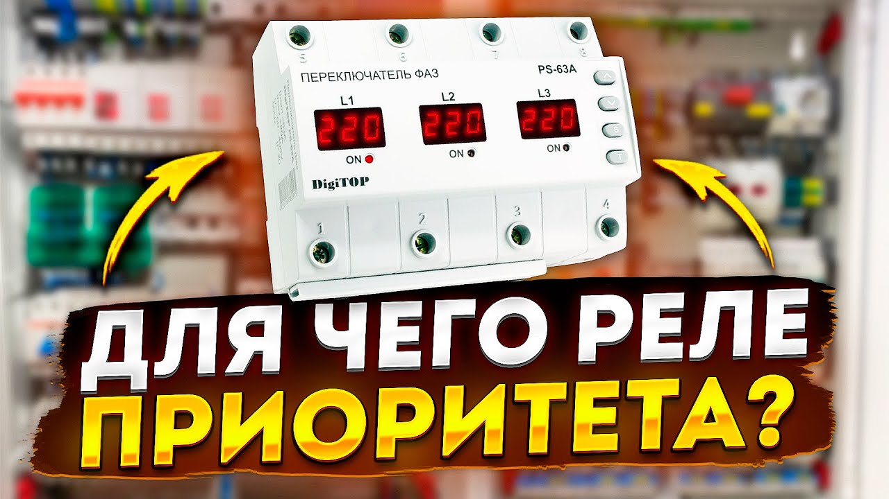
В данном видео я рассказываю и показываю принцип работы переключателя фаз и объясняю, для чего он нужен в современном электрическом щите. Очень часто подобные устройства называют «Реле приоритета», так как они обеспечивают бесперебойным питанием самую важную нагрузку в доме.
Владельцы частных домов часто сталкиваются с ситуацией: свет моргнул, половина дома погасла, котел встал, а другая половина дома работает как ни в чем не бывало. Это классическая проблема трехфазного ввода: «отвалилась» одна фаза. В этом видео мы разбираем устройство, которое решает эту проблему автоматически — реле выбора фаз (оно же переключатель фаз или реле приоритета).
В большинстве современных коттеджей ввод трехфазный (15 кВт, 380В). В щите нагрузка распределяется по трем фазам:
Если на подстанции или линии происходит авария и пропадает, например, Фаза С, у вас останавливается газовый котел и скважинный насос. При этом в гостиной телевизор работает. Бегать переключать провода в щите под напряжением — опасно и глупо.
Это устройство мониторит наличие напряжения на всех трех входящих фазах. Его задача — выбрать «живую» фазу и запитать от неё критически важных потребителей.
Главная ошибка новичков: Попытка подключить через переключатель фаз весь дом. Этого делать нельзя!
Обычные модульные переключатели (например, DigiTop, Новатек и др.) рассчитаны на ток 16А, 40А или 63А. Если в момент переключения на одну фазу «сядет» весь дом (включая электроплиту, чайник и стиралку), вводной автомат просто выбьет по перегрузке.
Через реле выбора фаз мы запитываем только жизненно важные системы, которые потребляют немного, но должны работать всегда:
У большинства реле есть настройка «Приоритетная фаза». Это важный момент, влияющий на комфорт.
Устройство всегда стремится вернуться на Фазу 1.
Проблема: Если на линии ремонт и фаза L1 то появляется, то исчезает, ваш свет будет постоянно моргать, переключаясь туда-сюда. Это раздражает и вредит технике.
Устройство сидит на L1. Фаза пропала — ушло на L2. Когда L1 вернулась, реле не переключается обратно, а остается на L2 до тех пор, пока на ней нормальное напряжение.
Совет: Для жилых домов лучше выбирать режим «без приоритета» или выставлять большую задержку возврата, чтобы избежать лишних коммутаций.
Переключатель фаз — это первый рубеж обороны. Но он не спасет, если отключат все три фазы сразу (полный блэкаут).
В следующих видео мы разберем, как интегрировать эту схему с источником бесперебойного питания (ИБП) и генератором, чтобы получить систему, которая не боится вообще никаких аварий на линии.
Итог: Реле выбора фаз — обязательный элемент щита для частного дома. Цена вопроса невелика, но оно спасает вас от разморозки системы отопления и позволяет оставаться с интернетом, даже если у соседей на вашей фазе света нет.
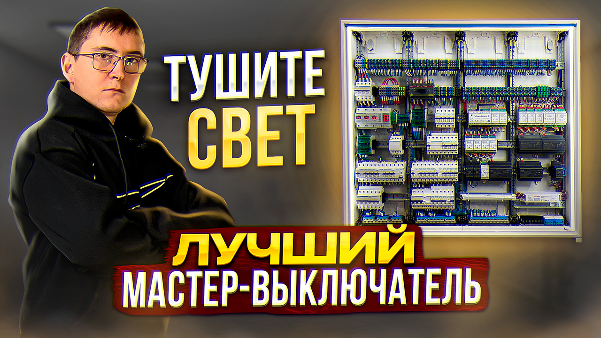
Обзор премиального электрощита для бани. Разбираем сборку стоимостью более полмиллиона рублей на базе контроллера WirenBoard и софта SprutHub. Показываю, из чего складывается такая цена, какие компоненты использованы и какие сценарии автоматизации реализованы в зоне отдыха.
«Баня» в современном понимании — это не просто сруб с печкой. Это полноценный спа-комплекс с комнатами отдыха, кухней, сложным освещением и вентиляцией. В этом видео мы разбираем огромный распределительный щит (корпус Hager на 288 модулей!), который управляет баней премиум-класса. Сердцем системы стал контроллер wirenboard 7 под управлением spruthub.
Наполнение щита соответствует бюджету. Здесь нет компромиссов:
В бане свет играет ключевую роль. Мы используем диммеры для управления лентами, чтобы создавать расслабляющую атмосферу.
Сценарии освещения:
Даже в бане электрика должна быть отказоустойчивой. Мы применили несколько проверенных решений:
Установлен переключатель ввода. Если основная сеть пропадает, заказчик переводит рубильник, и баня запитывается от генератора. При этом автоматика отслеживает напряжение через встроенный вольтметр.
Как и в щитах для дома, здесь реализована схема с проходными клеммами. Сейчас стоят перемычки. Если качество сети ухудшится, заказчик просто купит стабилизаторы и подключит их в эти клеммы за 10 минут, не перебирая щит.
Внутри корпуса установлена светодиодная лента. Она работает в дежурном режиме (при открытии дверцы) и в аварийном — если выбило вводной автомат, щит сам себя подсвечивает, чтобы вы могли найти неисправность.
Самое интересное — это логика управления, реализованная на контроллере.
Расположен на выходе из бани.
Длинное нажатие: Отключает весь свет в здании, кроме фасадного освещения (чтобы дойти до дома) и неотключаемых линий (холодильник, септик).
Защита от случайных нажатий: Короткое нажатие на эту кнопку ничего не делает.
В каждой комнате (например, в спальне или комнате отдыха) есть обычный выключатель света.
В щите установлен контактор, который управляет розеточными группами. Когда вы заходите в баню и включаете свет в коридоре, система понимает, что «кто-то пришел», и автоматически подает питание на все розетки.
Часто спрашивают: «Зачем мне умный дом в бане? Поставьте обычные импульсные реле!».
Давайте посчитаем. Чтобы реализовать функцию мастер-выключателя на импульсных реле, нужно купить само реле, дополнительные модули центрального управления и кучу проводов.
Математика: Стоимость одного канала управления (порта) на контроллере wirenboard в 3 раза ниже, чем стоимость схемы на брендовом импульсном реле.
При этом за меньшие деньги вы получаете:
Итог: Щит за полмиллиона в баню — это не прихоть. Это надежная силовая часть (Schneider/Hager) и интеллектуальное управление, которое на масштабе целого здания оказывается выгоднее и функциональнее устаревших аналоговых решений.
История о том, как мы создали корпус и раму для электрощита с нуля в условиях локдауна 2020 года. Это был сложный вызов: я получил травму и почти потерял зрение, поэтому чертить и работать было невероятно трудно. Но мы справились. В конце видео — спойлер нового проекта.
Весна 2020 года. Начало пандемии, локдауны и объект, который не вписывался ни в какие стандарты. Нам требовалось разместить огромную систему автоматизации и силовой электрики. Расчетные габариты ниши — 2150x900 мм. Готовых корпусов такого размера на рынке просто не существует, а стыковка двух промышленных шкафов стоила бы космических денег. Решение пришло само: если нельзя купить — нужно построить.
Мы пошли по пути создания кастомной конструкции. Это не просто «ящик из досок», а продуманное инженерное сооружение.
Базовый короб выполнен из фанеры. Сразу отвечу скептикам по поводу горючести: дерево было тщательно обработано жаростойким печным герметиком. Этот состав превращает древесину в негорючий материал, способный выдерживать открытый огонь и экстремальные температуры.
Изначально мы планировали обшить нутро гладким шлифованным алюминием для идеального отражения света. Но из-за закрытых магазинов пришлось использовать то, что было доступно — рифленый алюминиевый лист («квинтет»).
Получилось даже лучше: щит приобрел брутальный индустриальный вид. Алюминий выполняет роль теплоотвода и дополнительного негорючего экрана.
Внутренняя рама — это скелет щита. Мы сварили её из алюминиевой профильной трубы. Это обеспечило легкость и жесткость конструкции.
Самым сложным этапом оказалось закрыть эту красоту, чтобы это было безопасно и эстетично. Мы прошли три стадии эволюции:
Сначала мы распечатали чертеж 1:1 на бумаге, наклеили на картон и вырезали. Это обязательный этап — «примерка», чтобы убедиться, что все вырезы под автоматы совпадают идеально.
Мы хотели сделать глянцевые черные панели из акрила. Выглядело дорого, но на практике оказалось провалом.
Проблема: Акрил — хрупкий материал. Первая панель лопнула при монтаже (перетянули винт). Вторая треснула при транспортировке. Для электрощита, который должен служить годами, это недопустимо.
Идеальным материалом оказался композит (сэндвич: алюминий — пластик — алюминий).
В комментариях часто пишут: «Самодельный щит сгорит!». Давайте будем честными: горят любые материалы, вопрос лишь в температуре и времени.
Стандартные пластиковые щиты от застройщиков горят и плавятся великолепно. Наш кастомный щит имеет двойную защиту (герметик + алюминиевая обшивка) и собран на негорючем композите. При грамотном монтаже и качественных контактах риск возгорания здесь не выше, чем в заводском металлическом шкафу.
Опыт создания этого щита открыл для нас новое направление. Мы поняли, что щит может быть арт-объектом.
Итог: Кастомный щит — это решение не для всех. Это дорого, долго и требует высокой квалификации. Но для уникальных дизайнерских объектов, где стандартные белые ящики портят вид или не влезают в габариты, это единственный и самый эффектный выход.
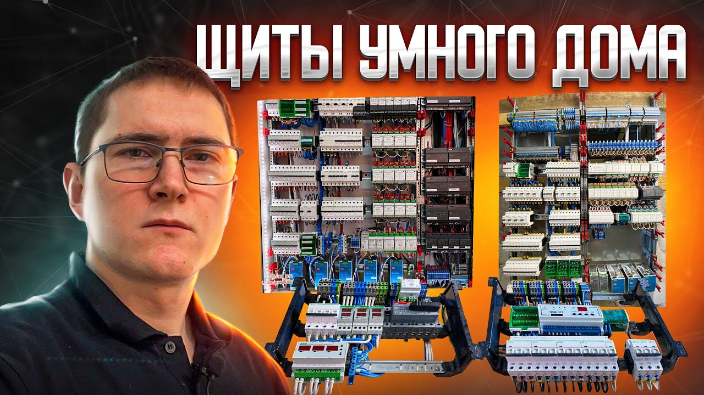
В этом видео я подробно разбираю состав электрощитов для умного дома на базе российского контроллера WirenBoard. Мы посмотрим, какие компоненты позволяют собрать надежную систему автоматизации и при этом существенно сэкономить бюджет по сравнению с зарубежными аналогами.
Можно ли собрать функциональный умный дом, не разорившись на европейских брендах автоматики? В этом видео мы разбираем серию щитов (общей емкостью более 900 модулей!), которые отправляются заказчикам в Хабаровск. В основе системы — российский контроллер wirenboard 7. Мы покажем, как грамотно спроектировать питание, защиту и управление светом в современном коттедже.
Любой умный дом начинается с глупого, но надежного «железа». В наших щитах мы используем проверенные решения:
Умный дом должен работать, даже когда "город" отключил свет. Мы реализовали трехуровневую систему резервирования питания для "мозгов" дома (контроллера и датчиков):
Важный нюанс: Мощные блоки питания (например, Mean Well NDR-480) имеют большую глубину. Для их установки мы используем специальные кронштейны или углубленные DIN-рейки, поэтому глубина шкафа должна быть не менее 250 мм. Учитывайте это при выборе корпуса!
В современном доме свет — это не только люстры. Это километры светодиодной ленты.
Контроллер wirenboard 7 управляет всем: светом, шторами, климатом, защитой от протечек.
Мы используем дифференциальные автоматы Schneider Electric Acti9.
Почему они хороши?
У них есть двойная индикация (VisiTrip):
Сборка на wirenboard позволяет получить функционал премиальных систем за бюджет, который в разы ниже решений на KNX или Loxone. При этом вы получаете промышленную надежность (Modbus), гибкость настройки и возможность интеграции в любую экосистему (Apple HomeKit, Алиса, Google Home).
Щит на 540 модулей может показаться огромным, но каждый элемент в нем выполняет свою функцию: защищает вас, вашу технику и делает ваш дом по-настоящему удобным.
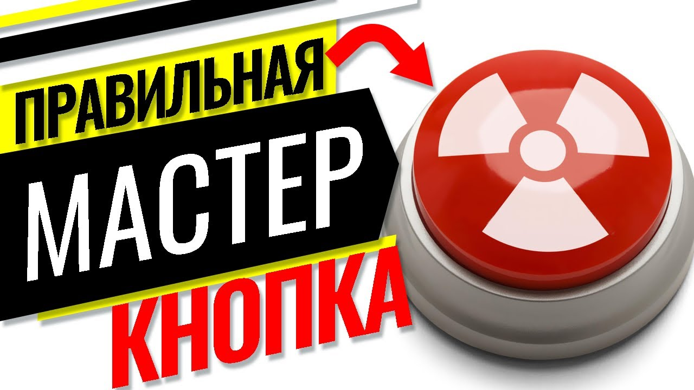
Мастер-выключатель — это кнопка у выхода, гасящая весь свет. Худшее решение — делать это через контактор: он гудит, шумит, и им неудобно пользоваться. В этом видео я показываю, каким должен быть настоящий, современный мастер-выключатель, как он работает и какой уровень комфорта дает владельцу.
Бегать перед выходом из дома по всем комнатам, щелкая выключателями — это прошлый век. Сегодня стандартом де-факто стала функция «Мастер-выключатель». Но реализовать её можно по-разному. Можно просто «отрубить» всё питание контактором, а можно сделать интеллектуальную систему управления. В этом видео мы показываем, как настраиваем логику освещения в наших щитах на базе контроллеров wirenboard.
Это кнопка, расположенная в прихожей. Её задача — погасить весь свет в доме, когда вы уходите. Но есть нюанс безопасности.
При этом важные потребители (холодильник, серверная, аквариум) остаются работать. Это гибкая настройка, доступная только на программируемых контроллерах.
Глобальная кнопка — это хорошо, но удобство должно быть и внутри комнат. Зачем вам выходить в коридор, чтобы выключить свет в гостиной?
Обычный выключатель при входе в комнату превращается в пульт управления:
Это экономит время. Уходя из гостиной спать, вы не обходите все углы, а просто зажимаете клавишу у двери на секунду.
В спальне мы реализуем самую продвинутую логику. У вас есть прикроватные выключатели (у бра).
Реализовать такую сложную логику (различать короткие, длинные и двойные нажатия на одной и той же клавише) на обычной электрике или импульсных реле невозможно или безумно дорого.
Контроллер wirenboard позволяет нам программировать любую клавишу под любые задачи. Мы можем менять сценарии хоть каждый день, не перекладывая проводку. Это и есть настоящий Умный дом, который подстраивается под ваши привычки, а не заставляет вас подстраиваться под него.
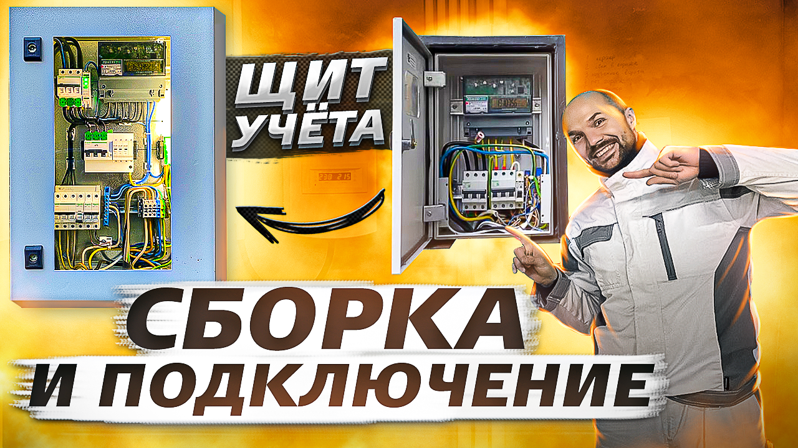
Подробная видеоинструкция по сборке вводного щита учета для частного дома. Я объясняю, почему штатные щиты от сетевых компаний лучше сразу заменить, зачем нужен просторный корпус, и показываю правильную технологию работы с проводом СИП и наконечниками.
Подключение участка к электросети — это стандартная процедура: 3 фазы, 15 киловатт. Обычно люди покупают самый дешевый металлический ящик, вешают его на столб и забывают. Но если вы строите дом для себя и планируете использовать сложное оборудование (генераторы, стабилизаторы), подход должен быть другим. В этом видео мы разбираем сборку надежного вводного щита, который не сгниет через год и не устроит пожар из-за плохого контакта СИП.
Для этого проекта мы выбрали корпус DKC серии ST.
Маленький совет: пилить DIN-рейки болгаркой — это искры, шум и заусенцы. Гораздо чище и аккуратнее это делать аккумуляторной сабельной пилой. Рез получается идеальным, а стружка не летит в глаза.
Забудьте про самоклеящиеся площадки для стяжек. В условиях уличных перепадов температур клей пересыхает, и через год все ваши аккуратно уложенные провода повиснут "лапшой".
Наш выбор: Площадки под винт (например, Промрукав). Мы сверлим монтажную панель и крепим их намертво. Это надежно.
Чтобы соединить автоматы красиво, используем гребенку. Но как её отрезать ровно?
Хитрость: Вытащите медные жилы из пластикового корпуса. Пластик отрежьте ножницами для полипропиленовых труб (рез будет идеальным), а медь откусите бокорезами или отпилите. Потом соберите обратно.
Все многожильные провода (ПВ-3) обязательно обжимаем наконечниками НШВИ. Это стандарт.
Кроме вводного автомата и счетчика, мы установили УЗИП от Schneider Electric (Устройство защиты от импульсных перенапряжений). Если в линию ударит молния, этот прибор спасет вашу домашнюю технику, приняв удар на себя.
Внутри щита мы смонтировали небольшой светильник с кнопкой. Если зимой в 10 вечера у вас выбьет автомат, вам не придется подсвечивать себе телефоном в зубах, чтобы найти проблему.
Почему мы вообще меняем старый щит? Главная причина — безопасность подключения вводного кабеля.
Обычно к вам на столб приходит СИП (Самонесущий Изолированный Провод). У него алюминиевые жилы.
В дешевых щитах СИП часто заводят напрямую в клеммы автоматического выключателя. Это грубейшая ошибка!
Правильное решение: В нашем щите СИП подключается через специальные переходные клеммы (алюмо-медные) или через проходные клеммы, которые обеспечивают пружинный прижим и не дают контакту ослабнуть со временем. Только после этого медью мы идем на автомат.
Качественный щит учета — это инвестиция в спокойствие. Использование правильных наконечников, надежного корпуса DKC и защиты от перенапряжений гарантирует, что вам не придется вызывать аварийку в мороз из-за отгоревшего нуля.